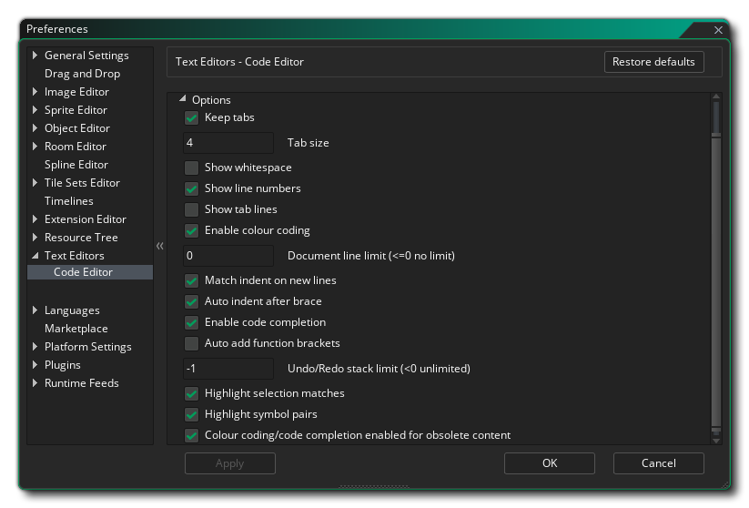

In den Voreinstellungen für Text-Editoren wird festgelegt, wie die verschiedenen Code- / Skript-Editoren aussehen und sich anfühlen. Die Hauptseite hat folgende Optionen:
- Syntax checking delay (ms) - Die Verzögerungszeit (in Millisekunden), bevor der Syntax-Checker ausgeführt wird. Dieser Standardwert ist 2000ms.
- Code Completion Delay (ms) - Die Verzögerungszeit (in Millisekunden)
- Skripte im Vollbild-Editor öffnen - Wenn Sie diese Option aktivieren, werden Skriptressourcen in einem neuen Arbeitsbereich automatisch geöffnet. Wenn diese Option deaktiviert ist, werden sie in einem Fenster im aktuellen Arbeitsbereich geöffnet. Diese Option ist standardmäßig deaktiviert.
- Offene Shader im Vollbild-Editor - Wenn Sie diese Option aktivieren, werden Shader-Ressourcen in einem neuen Arbeitsbereich automatisch geöffnet. Wenn diese Option deaktiviert ist, werden sie in einem Fenster im aktuellen Arbeitsbereich geöffnet. Diese Option ist standardmäßig deaktiviert.
- Objektereignisse im Vollbild-Editor öffnen - Wenn Sie diese Option aktivieren, werden Objektereigniscode-Editoren in einem neuen Arbeitsbereich automatisch geöffnet. Wenn diese Option deaktiviert ist, werden sie in einem Fenster geöffnet, das an den Objektereignis-Editor angekettet ist. Diese Option ist standardmäßig deaktiviert.
- Ereignisskripte als Registerkarten im selben Fenster öffnen - Beim Hinzufügen von Code oder Drag & Drop zu einem Ereignis wird das Codefenster mit dem Ereignisfenster verkettet. Wenn diese Option aktiviert ist, werden weitere Ereignisse, die zur Bearbeitung geöffnet sind, hinzugefügt Fenster als Tabs entlang der Oberseite. Wenn Sie diese Option deaktivieren, wird jedes Ereignis als eigenes verkettetes Fenster geöffnet. Diese Option ist standardmäßig aktiviert.
- Öffnen Sie verknüpfte Skripts als Registerkarten im selben Fenster - Wenn Sie mehrere verknüpfte Skripts haben und diese öffnen, werden sie standardmäßig im selben Fenster wie Registerkarten gruppiert. Wenn Sie diese Option deaktivieren, werden sie jeweils in ihrem eigenen Fenster / Arbeitsbereich geöffnet. Diese Option ist standardmäßig aktiviert.
- Texteditor in Fokusansicht verschieben - Wenn Sie einen Texteditor aus einem Objektereignis öffnen, wird durch Auswahl dieser Option der Arbeitsbereich automatisch verschoben, um den Editor in die Grenzen zu bringen. Diese Option ist standardmäßig deaktiviert.
- Standardbreite des Codefensters - Legen Sie die Standardbreite (in Pixel) für das Codefenster beim Öffnen fest. Der Standardwert ist 900.
- Standardhöhe des Codefensters - Legen Sie die Standardhöhe (in Pixel) für das Codefenster beim Öffnen fest. Der Standardwert ist 600.
- Minimale Codefensterbreite - Legen Sie die Mindestbreite (in Pixel) fest, die vom Codefenster zugelassen wird. Der Standardwert ist 300.
- Minimale Codefensterhöhe - Legen Sie die minimale Höhe (in Pixel) fest, die vom Codefenster zugelassen wird. Der Standardwert ist 200.
Abgesehen von den oben genannten Optionen gibt es auch zwei Unterkategorien für die Code- und Dialogeditor-Einstellungen (im Folgenden zusammen dargestellt, da die Einstellungen für beide genau gleich sind):
Mit den Voreinstellungen für Farben können Sie ändern, wie der Code- und Skript-Editor verschiedene Texte anzeigt. Jeder Eintrag enthält eine Reihe von Untereinträgen, mit denen Sie genau definieren können, wie jedes einzelne Stück Text aussehen soll, wie im Beispielbild oben gezeigt. Im Allgemeinen können Sie Farbe, Schriftart, Größe und Stil für jede der verschiedenen Optionen festlegen. Weiter unten können Sie auch allgemeinere Stile für die Auswahl von Code-Klammern usw. festlegen. 
Unter den Farbeinstellungen haben Sie die verschiedenen Styling- Optionen. Diese Einstellungen werden verwendet, um das Verhalten des Code / Skript-Editors mit den folgenden Optionen festzulegen:
- Keep tabs: Wenn diese Option aktiviert ist, wird die Tabulatortaste als Tabulatorzeichen - '\ t' - im Editor gedrückt gehalten, während nicht abgehakt bedeutet, dass Tabulatoren in Leerzeichen umgewandelt werden. Standard ist deaktiviert.
- Tabulatorgröße: Die Anzahl der Zeichenbereiche, die beim Drücken von "Tab" den Code einrücken sollten. Standard ist 4.
- Whitespace anzeigen: Anzeige "." um Leerzeichen anzuzeigen (siehe Bild unten). Standard ist deaktiviert.
- Zeilennummern anzeigen: Gibt an, ob die Zeilennummern auf der linken Seite angezeigt werden sollen oder nicht. Standard ist aktiviert.
- Tab-Linien anzeigen: Zeigen Sie "...." an, um den Tab-Bereich anzuzeigen. Standard ist deaktiviert.
- Farbcodierung aktivieren: Aktivieren oder deaktivieren Sie die Farbcodierung für den Editor. Wenn diese Option deaktiviert ist, wird der Code nicht formatiert, und wenn er aktiviert wird, wird er mit der oben im Abschnitt Farbe angegebenen Formatierung formatiert. Standard ist aktiviert.
- Zeilenlimit für Dokumente: Legen Sie die maximale Anzahl von Zeilen für ein bestimmtes Editordokument fest. Der Standardwert ist 0 (0 oder weniger ist im Wesentlichen unendlich) und jeder andere Wert begrenzt die erlaubten Zeilen.
- Einrückung bei neuen Zeilen anpassen: Aktivieren oder deaktivieren Sie die automatische Einrückung für Ihren Code. Der Standardwert ist aktiviert. Dadurch werden Registerkarten beibehalten, die in einer Zeile stehen, wenn eine neue Zeile hinzugefügt wird.
- Automatischer Einzug nach geschweifter Klammer: Aktivieren oder deaktivieren Sie die automatische Einrückung für Ihren Code beim Hinzufügen von geschweiften Klammern {}. Der Standardwert ist aktiviert. Dadurch wird die nächste Codezeile angezeigt, wenn eine neue geschweifte Klammer {und eine neue Zeile hinzugefügt werden.
- Codevervollständigung aktivieren: Aktivieren oder deaktivieren Sie das Codevervollständigungsfenster. Wenn Sie Code schreiben und dies aktiviert ist, erhalten Sie ein Popup-Fenster mit möglichen Funktionen, die Sie basierend auf dem aktuellen Eingabetext verwenden können. Standard ist aktiviert.
- Funktionsleisten automatisch hinzufügen: Aktivieren oder deaktivieren Sie das automatische Hinzufügen von Klammern (), wenn Sie die automatische Vervollständigung verwenden. Wenn Code geschrieben wird und dies aktiviert ist, fügt die IDE automatisch die beiden Klammern () hinzu, die eine Funktion benötigt, indem sie den Cursor in sie setzt, wenn die Funktion Argumente annimmt, oder den Cursor nach ihnen platziert, wenn dies nicht der Fall ist. Diese Funktion funktioniert nur, wenn die Funktion aus der automatischen Vervollständigung ausgewählt wurde. Standard ist aktiviert.
- Undo / Redo Stack Limit: Hier können Sie das Stacklimit für Undo / Redo einstellen. Alles unter 0 ist im Wesentlichen unendlich (begrenzt durch den verfügbaren Speicher), während positive Werte den Stapel auf diese Zahl begrenzen und jegliche Aktion am Ende des Stapels entfernen, wenn das Limit erreicht ist. Standard ist -1.
- Highlight selection matches: Dadurch wird jeder Codeabschnitt hervorgehoben, der an anderer Stelle dupliziert wurde. Wenn Sie beispielsweise eine Funktion auswählen, werden alle Instanzen dieser Funktion im aktuellen Codefenster ebenfalls hervorgehoben. Standard ist aktiviert.
- Farbcodierung / Codevervollständigung für veraltete Funktionen: Dadurch wird jeder Codeabschnitt markiert, der veraltet ist. Standard ist aktiviert.